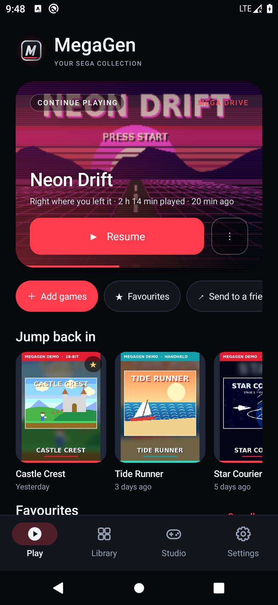
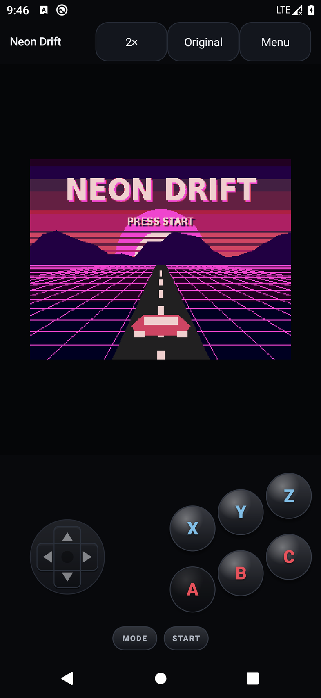
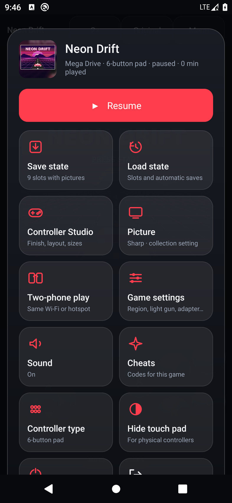
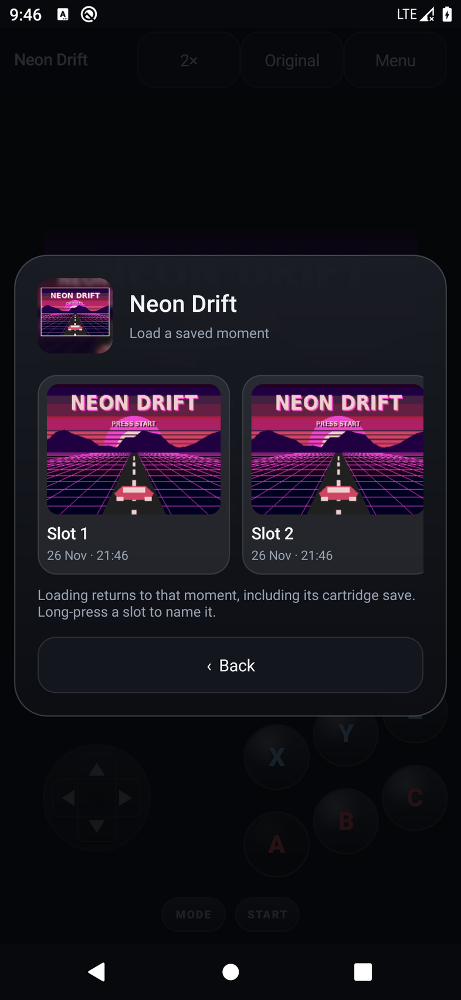
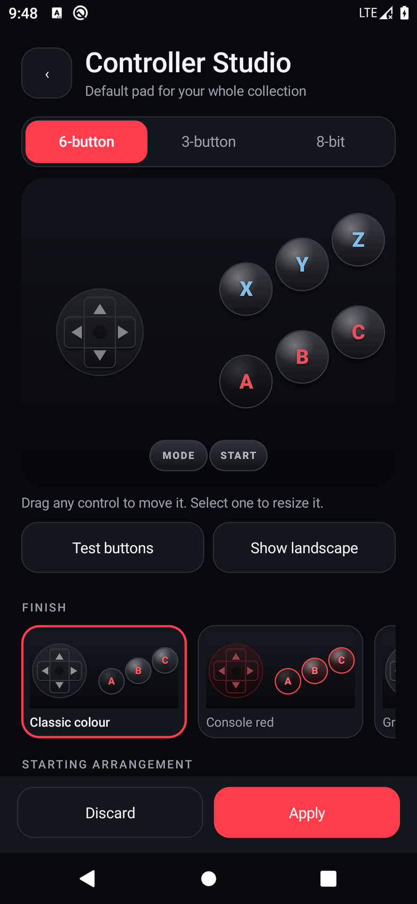
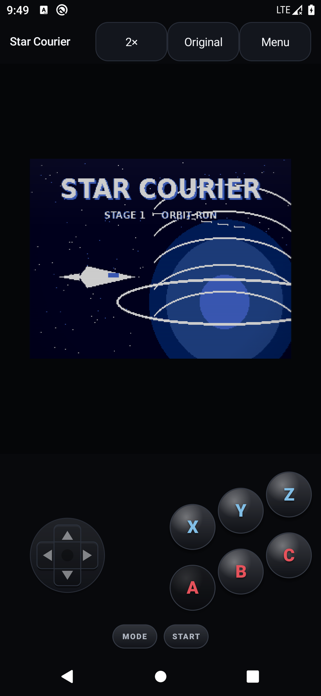
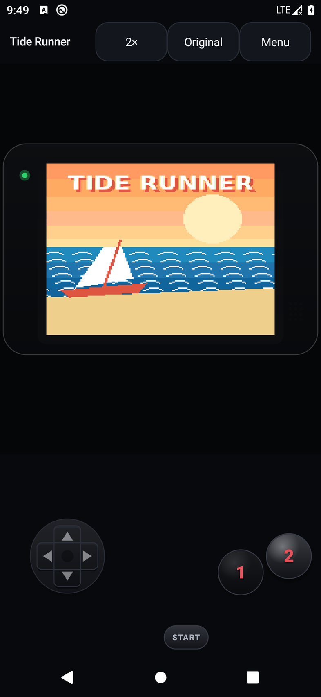
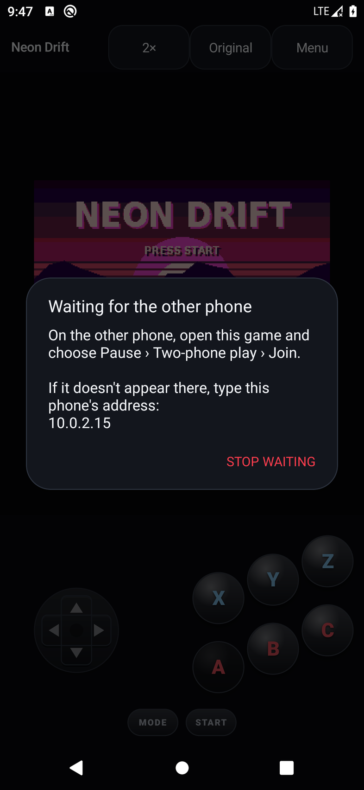
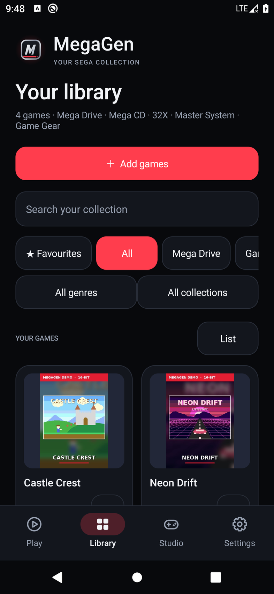
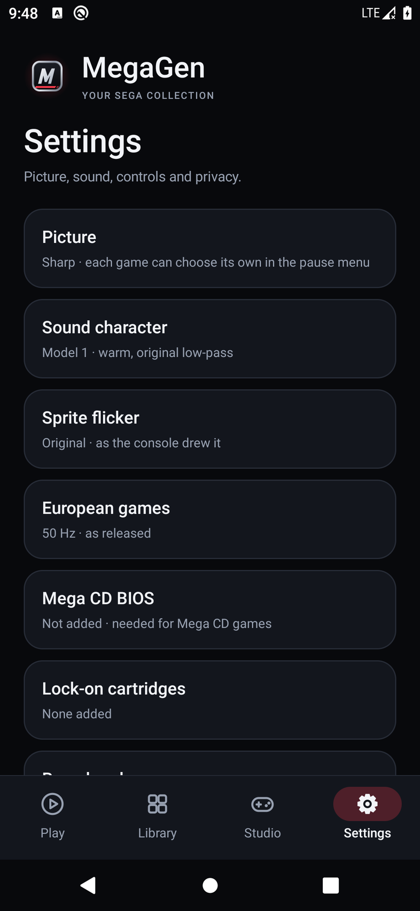

Every Sega classic you own. One home on your phone.
MegaGen plays the Mega Drive, Mega CD, 32X, Master System, Game Gear, SG-1000 and Pico game files you own. Each game gets the controller it was made for, a sharp picture at the right shape, and a Continue card that opens on the exact moment you left.
Design your own six-button pad, save to nine slots with a picture of each moment, play a friend on a second phone over Wi-Fi, aim a light gun with your finger, and switch on a CRT or composite look. No games come with it, there are no adverts, and nothing leaves your phone.
MegaGen plays game files you supply. No games come with it. What the law says
- Version 1.0.0
- Android 10 or later, 64-bit phones
- 2.4 MB
Free, with nothing to unlock. No adverts, no account with the developer, no tracking. Compare or read the release notes.
Chrome may say the file might be harmful. It shows this for app files that do not come from Google Play. Choose Download anyway.

- No advertsNone in the app and none on this site.
- Nothing to buyEvery feature is free.
- Stays on your phoneNo account, no tracking, no uploads.
- No games includedBring your own game files.
A look inside
These are the real screens, taken from the app running on Android 10. The games are MegaGen's own demo cartridges, drawn and programmed for these pictures, so no commercial game appears anywhere. Swipe or scroll sideways to see them all.









How it works
MegaGen runs the games on your phone with Genesis Plus GX and PicoDrive, two well-known open-source engines. It never needs the internet to play.
Add your games
Choose game files or archives, or point MegaGen at a folder. Cartridges, ZIP and 7z files, Mega CD discs (cue with its tracks, CHD or ISO) and multi-disc playlists are recognised by their contents, not their names.
Play
Tap a game. Each one gets the right pad: six buttons when the game uses them, three otherwise, two for 8-bit games. Pause opens saves, picture, controls and game settings. Leave, and Continue opens on that exact moment.
Make it yours
Design the touch pad in Controller Studio, pair a six-button controller, choose a picture look, or play a friend on a second phone over the same Wi-Fi or a hotspot.
Everything is in, and all of it is free
Nothing below is held back for a paid tier, because there is no paid tier.
Every Sega system
- Seven systems
- Mega Drive and Genesis, Mega CD and Sega CD, 32X, Master System, Game Gear, SG-1000 and Pico, in one library.
- Mega CD
- Discs as cue with tracks, CHD or ISO, multi-disc playlists with Change disc, and a guided screen for your console's BIOS.
- Lock-on and music
- Sonic & Knuckles lock-on, Game Genie and Action Replay files you add, and MSU-MD CD soundtracks.
- Recognised by contents
- Systems, regions and six-button support are read from each game file, with an offline catalogue of 4,380 games.
Saves and speed
- Nine slots with pictures
- Plus three automatic saves. Each slot shows the moment, the date and an optional name.
- Continue
- Opens on the exact moment you left, from the Play page.
- Run-ahead
- Answers your buttons a frame sooner than the console did. On by default, except for 32X and Pico.
- Rewind and 2×
- Hold to rewind a mistake, hold to play at double speed. Rewind is off until you switch it on.
Controls
- Controller Studio
- 14 finishes, four arrangements, accent colours, sizes, opacity and every control dragged where you want it.
- The right pad for each game
- Six buttons, three buttons or two, chosen by the game and changed per game.
- Six-button controllers
- Sega-style pads are recognised with C and Z where they belong; any controller can be set up in eight presses.
- Light gun and mouse
- Aim a Menacer or Justifier by touching the picture, or drag to move the Sega Mouse. Team Player and 4-Way Play for four players.
The picture and sound
- Five looks
- Sharp, Smooth, Original, Composite blend (the console's own TV blend) and CRT, for all games or one.
- Game Gear
- An original handheld frame and the soft ghosting of the real LCD.
- Sound chip
- The most accurate FM sound, as the first console or the later model, and Master System FM sound.
- Sprite flicker and 50 Hz
- Keep the original flicker or remove it, and play European games at 50 or 60 Hz.
Two phones and privacy
- Two-phone play
- Same Wi-Fi or a hotspot. The phones find each other, stay frame for frame in step and fix themselves if they drift.
- Backups
- Saves only or everything, in one file, with an optional password.
- App lock
- An optional PIN or fingerprint.
- Send the app
- Quick Share, Bluetooth, or a code a friend scans to download MegaGen straight from your phone.
Private by design
Nothing leaves your phone
Games, saves, play time and settings stay in MegaGen's private storage. There is no account and nothing is uploaded.
Online only when you ask
Cover downloads are off until you switch them on, and Check for updates only runs when you tap it.
No tracking of any kind
No adverts, analytics or crash reports, and no access to your contacts, camera, microphone or location.
Use it within the law
MegaGen is for game files you have the right to use, such as games you made, free homebrew games shared by their makers, or copies you are allowed to make. It comes with no games, no BIOS files and no console software.
- Copyright, Designs and Patents Act 1988. Copying a game, or downloading or sharing a copy that someone else made, without the copyright owner's permission can infringe copyright (section 16). Making, selling or distributing copies of games without permission can also be a criminal offence (section 107). Only add games and BIOS files you have the right to use.
Laws differ in other countries. If you are not in the UK, the rules where you are apply. Read the terms of use.
Installing and updating
MegaGen is not on Google Play, so your phone asks a couple of extra questions the first time.
Download the app file
Tap Download on your phone. The file is called MegaGen.apk and is about 2.4 MB. If Chrome says the file might be harmful, choose Download anyway. First tick the box to say you will use the app within the law.
Allow the install
Open the file. The first time, Android asks you to allow your browser to install apps. Allow it, go back and tap Install. If Google Play Protect steps in, choose More details, then Install anyway.
Updating later
In MegaGen, Settings, Check for updates asks GitHub for the newest version, only when you tap it. Download opens in your browser: install the new file over the old one and your games, saves and settings are kept.
Version 1.0.0, released 26 November 2026. See the release notes, or check your download.
Questions
Is MegaGen really free?
Yes. There is no paid version, no subscription and no adverts. Every feature is there from the start, and the engines it uses are free for non-commercial use, so it will stay free.
Does it come with any games?
No. MegaGen comes with no games, no BIOS files and no console software. You add game files you have the right to use.
Which games does it play?
Mega Drive and Genesis, Mega CD and Sega CD, 32X, Master System, Game Gear, SG-1000 and Pico games. Cartridges can be plain files, ZIP or 7z archives; Mega CD discs can be a cue sheet with its tracks, CHD or ISO.
Why does Mega CD need a BIOS?
The Mega CD started every disc with software built into the console. MegaGen does not include it: add the BIOS from your own console under Settings, Mega CD BIOS, and MegaGen reads its region from the file.
Is it on Google Play?
No. MegaGen is a personal project and is downloaded from this site as an Android app file. It needs Android 10 or later on a 64-bit phone.
Does it need the internet?
No. Playing, saving and two-phone games all work with no internet. MegaGen only goes online if you switch on cover downloads or tap Check for updates.
How do two phones play together?
Both phones need MegaGen and the same game, on the same Wi-Fi or with one joined to the other's hotspot. One taps Pause, Two-phone play, Host; the other taps Join and picks it, or types the address shown. The host is player 1.
Can I use a controller?
Yes. Bluetooth and USB gamepads work, six-button Sega-style pads are recognised with C and Z in the right place, and Quick setup maps any controller in eight presses. Several controllers become players 1 to 4.
Is it made by Sega?
No. MegaGen is an independent app. It is not made, endorsed or sponsored by Sega. Sega, Mega Drive, Genesis, Mega CD, 32X, Master System and Game Gear are named only to say which games MegaGen plays.
Who made it?
MegaGen is made by Jonathan Jackson, an independent developer in the United Kingdom, on top of the Genesis Plus GX and PicoDrive engines by their authors and contributors.
Pick up where you left off
Free, with no adverts and nothing to unlock. Made by the developer of several other free Android apps: see them all.